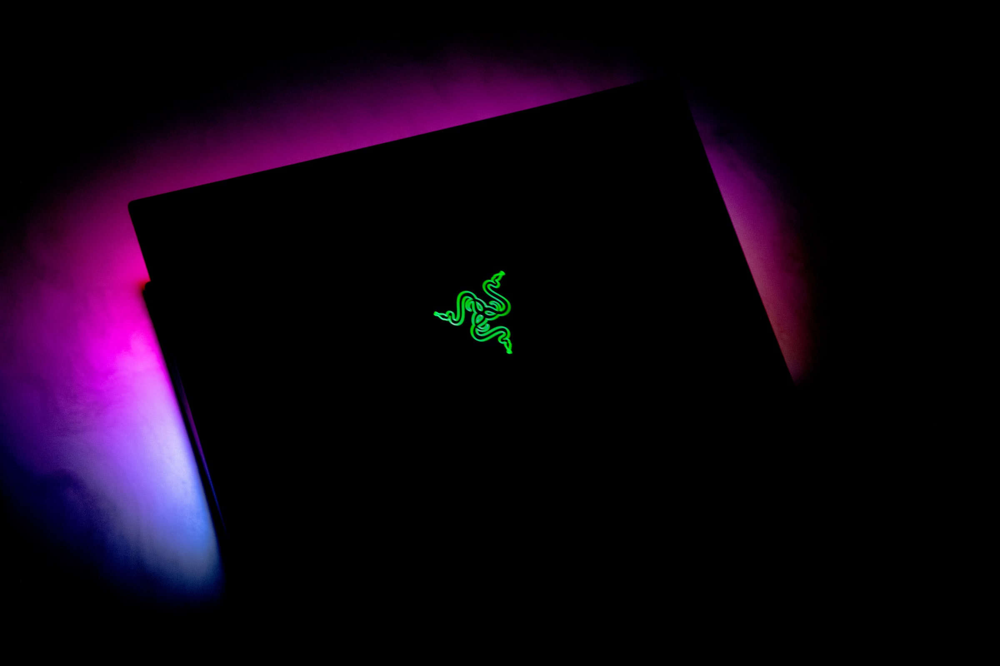

Ah yes. The Razer Blade. Though I cannot speak for every user out there, it is a beautiful machine. It is thin, light and powerful. Though I do not primarily game on it, it has amazing performance for the size and weight, though the trade off is the price. As a developer, running Linux can be crucial to a workflow. Or, you might just want to explore the world of Linux. I've used Linux for quite a long while, and I have tried to boot many Linux distros on the Razer Blade.
It is important to know that some quirks and issues may only apply to the Razer Blade 13, or even just my particular model. I may be just throwing things out here, but I truly hope this will help someone wracking their heads over an issue.
Speaking of my particular model, here are the specs:
- - Razer Blade Stealth 13" Late 2019 GTX Model
- - Intel Core i7-1065G7
- - Nvidia GeForce GTX 1650 with Max-Q Design
- - 3840 x 2160 (4K) Touchscreen
- - 512 GB Liteon SSD (famous for its coil whine at times)
Disclaimer:
Modifying your BIOS may void your warranty and may corrupt the firmware, leading to a "bricked" computer. Despite the risk of bricking your computer being very low, there is still a chance. Do this at your own risk. Thank you.Note: this article is assuming you already know how to make a bootable Linux drive and the basics of what Linux is. It also assumes intermediate computer knowledge.
Setting Up the Environment for Linux
These steps will apply to almost every computer in the world that wants to boot Linux.
- - Secure Boot is disabled
- - You want CSM disabled for most Linux OSes
Both of these settings are in the BIOS. To get into the BIOS of a Razer computer, follow this.
Once you are in there, you want to scroll around and find all three of them. Just click around with the "Enter" and arrow keys and find the settings. Secure Boot is usually under the "security" tab and the boot order is under the "boot" tab.
Linux Distro Statuses
- - Pop_OS! by System76 -- neither Nvidia or normal install works
- - Ubuntu (20.04 and onward tested) -- works
- - Arch-based OSes -- Working (Manjaro is confirmed to be working, assumed that rest are also working)
Quirks
Due to the fact that the Razer Blade has a Nvidia GPU (which infamously does not play well with Linux), installing certain OSes can be tricky. Along with another few quirks I have found, Linux can be hard to get along with (I apologize that I do not have a solution to most of these).
- - Nvidia drivers break the install, using nouveau breaks the display drivers for seemingly no reason
- - Dual booting on a single drive can make the installer think that its reading off a NTFS drive,
- though the part designated to use is not NTFS. NTFS is what Windows uses.
- - GRUB is incredibly small (this is fixable inside the operating system, though)
- - Installing Nvidia drivers sometimes bricks the install (NOT the system, don't worry) after you installed it.
- - Degrading performance when running on a single GPU, you want to have it dynamically switch between GPUs to get good performance. This is in `nvidia-settings`. You'll have to install the Nvidia drivers for that. (differs for OSes, so it is best you Google a tutorial that fits your OS and needs)